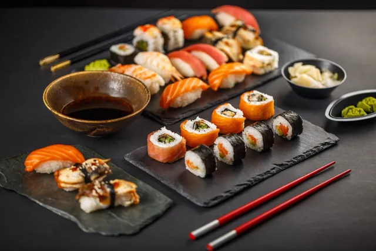
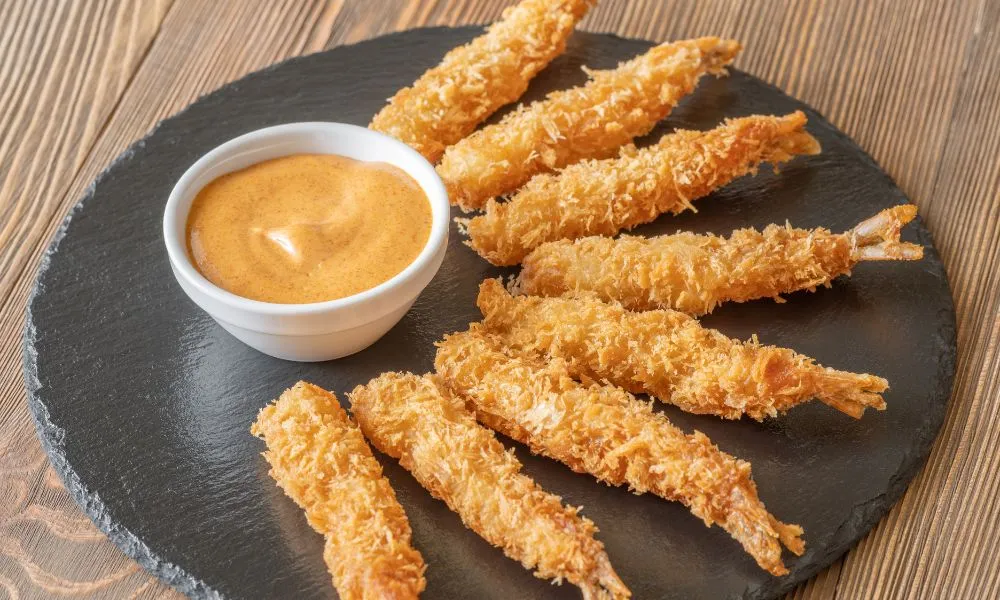
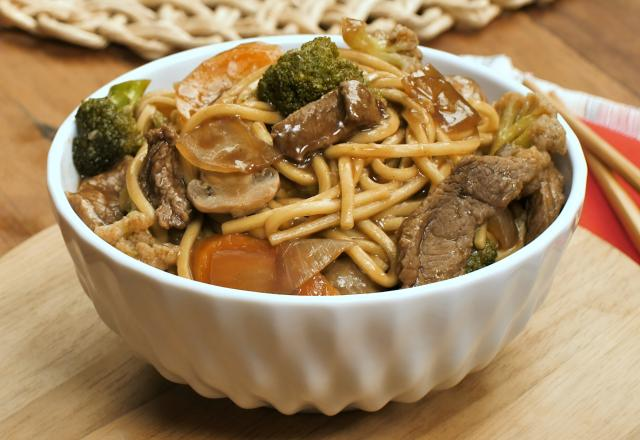
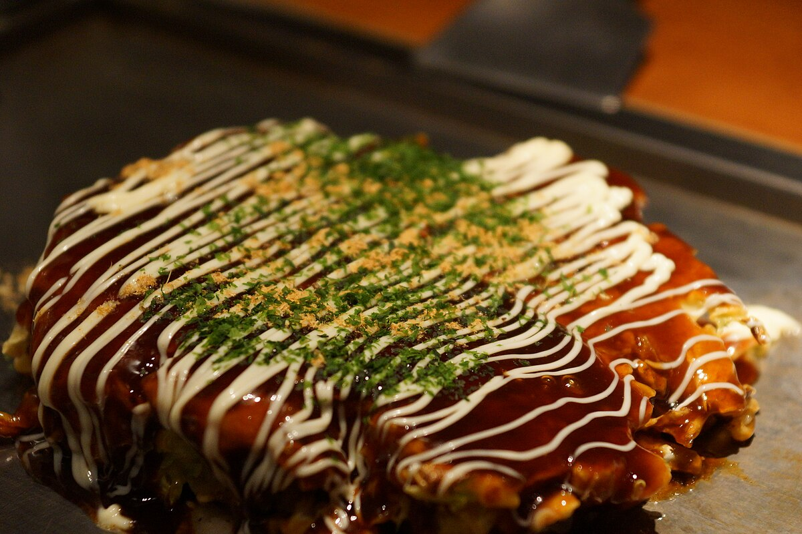
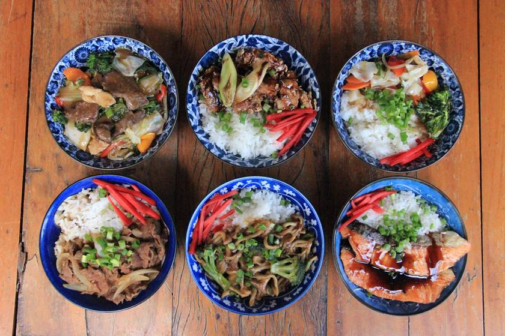

Pratos Típicos do Japão
A culinária japonesa é conhecida por sua delicadeza, equilíbrio e respeito aos sabores naturais dos ingredientes.

Sushi

Ramen

Tempurá

Yakisoba

Okonomiyaki

Donburi
Mais do que alimentação, a culinária japonesa reflete cultura, tradição e harmonia com a natureza.